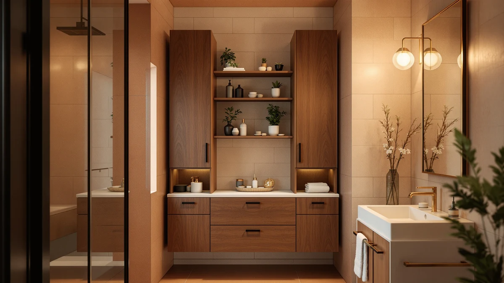

The Best Modular Bathroom Organizers (2026)
Prices and picks verified as of August 2026. Independent, reader-supported reviews.


Quick Answer
The best modular bathroom organizers mix and match carts, drawers, and door racks so you can rebuild your storage as your space changes. After comparing seven modular systems, we picked the Pipishell Slim Storage Cart ($21.99) as the best choice for most bathrooms, because its narrow three-tier frame rolls into gaps a fixed shelf never could.
Our pick: Pipishell Slim Storage Cart with — $21.99 Check Price on Amazon
Bottom line: our top pick is the Pipishell Slim Storage Cart with Wheels - 3 Tier Bathroom at $21.99. The best budget option is the MZYIWUU 2 Pack Cabinet Door Organizer at $13.49.
Things to Know Before You Buy
- "Modular" means you can rearrange it. The best modular bathroom organizers are carts, drawers, or racks you can reposition or restack as your storage needs change, instead of a fixed shelf bolted to one spot.
- Measure the gap before you buy. Slim rolling carts like the Pipishell and SPACELEAD are built for the narrow strip beside a toilet or vanity, so a tape measure saves you a return.
- Cabinet-door organizers need a door to work. The Sinnsally and MZYIWUU racks mount to the inside of a cabinet door, so check that door's height and clearance before ordering.
- Adhesive mounts skip the drill but depend on the surface. The Lae Nuvole rack sticks on with adhesive strips, which suits renters, and it holds best on a clean, smooth door.
- Prices here run from $13.49 to $23.97. None of these organizers is a big investment, so it is easier to combine two or three types, a cart plus a door rack, than to find one unit that solves every problem.
The best modular bathroom organizers turn a cramped vanity or an empty strip of wall into flexible, rearrangeable storage instead of a fixed shelf you are stuck with for years.
We compared seven modular storage pieces, rolling carts, pull-out drawers, cabinet-door racks, and an adhesive organizer, on fit, material, and price. The Pipishell Slim Storage Cart came out on top for most bathrooms. Its three-tier frame is narrow enough to roll into the gap beside a toilet or vanity, and at $21.99 it costs less than most fixed shelving while doing more.
If a rolling cart will not fit your layout, the Sinnsally cabinet-door rack turns wasted door space into storage for almost the same price, and the Simple Houseware pull-out drawer tucks under a sink for less than $24. Below, you will find what we like and do not like about each pick, so you can match it to the storage problem you actually have.
Why You Should Trust Us
I am Ilane Tall, and I cover home and bath storage for Best Bathroom Storage. I look at the kind of modular bathroom organizers people actually fit into small American bathrooms, not oversized fixtures that need a showroom's worth of space. For this guide, I focused on the questions a real shopper has: will it fit the gap I have, will it survive a humid bathroom, and will it hold what I actually own.
We do not run a physical testing lab, so we do not claim to have installed every cart or rack ourselves. Instead, we compare manufacturer specs, materials, and pricing against a wide set of verified buyer reviews, and we flag a product the moment a real complaint repeats. We earn a commission when you buy through our links, but that never changes which pick sits at the top.
How We Picked
We started with modular bathroom organizers built for small spaces: rolling carts, cabinet-door racks, pull-out drawers, and adhesive-mount units, then dropped anything with a reputation for tipping, snapping, or falling off a door within weeks.
From there we judged what was left on four things. Footprint came first, since a cart that does not fit the gap beside your toilet is useless no matter how much it holds. Mounting method came next: door racks and adhesive units need a compatible cabinet door, while carts and drawers work in open floor space. We weighed material third, favoring the metal-and-wood builds that resist bathroom humidity better than bare particleboard, and price came last, keeping the lineup between $13 and $24 so a modular system stays affordable to build out piece by piece.
How We Compared
We compared the best modular bathroom organizers the way a shopper actually shops: side by side on spec sheets, listed dimensions, and price, then cross-checked against verified owner reviews on Amazon.
We matched each unit's stated size against a standard 5-by-8-foot bathroom to see whether it would clear a door swing or fit inside a cabinet. We read through owner feedback looking for patterns, wheels that lock or do not, adhesive that holds or peels, drawers that stick, and noted any complaint that came up more than once as a con. We did not assign numeric scores, because a slim rolling cart that is perfect for a narrow gap can be the wrong pick for someone with a wide-open cabinet. Instead, we matched each organizer to the buyer and the space it actually serves.
Our Picks

Pipishell Slim Storage Cart with
What we like
- Slim frame rolls into gaps a fixed shelf cannot reach
- Three open tiers add real capacity without eating floor space
- Locking wheels keep it in place once it is positioned
Flaws but not dealbreakers
- Wire-and-wood shelves are not rated for heavy loads
- Open tiers show clutter more than a closed cabinet
| Material | Metal / wood |
| Size | 3-Tier |
The Pipishell Slim Storage Cart earns the top spot because it solves the hardest constraint in a small bathroom first: width. Its narrow, three-tier frame is built to roll into the strip of floor beside a toilet, vanity, or washing machine that most storage furniture is simply too wide for. The metal frame pairs with wood-look shelving, so it reads as more than a wire rack while staying light enough to reposition when you rearrange the room.
The cart format itself is what makes it modular. You can roll it out to reload the shelves, tuck it back into its gap, or move it to a different bathroom entirely if your storage needs change. Reviewers consistently note that the locking wheels hold the cart steady once it is in place, though a few point out that the bottom shelf sits low enough that tall bottles need to lie down. At $21.99, it costs less than a single fixed shelf unit while adding three tiers of usable storage, which is why it is our pick for most bathrooms.

Sinnsally 2 Pack Cabinet Door
What we like
- Two racks let you outfit two doors, or double up on one, for one price
- Mounts to the inside of a door, so it adds storage without using floor space
- Large-size racks hold more than a typical single-door organizer
Flaws but not dealbreakers
- Needs enough clearance for the door to still close
- Mounting hardware makes it a better fit for owners than renters
| Material | Metal / wood |
| Size | Large |
The Sinnsally 2 Pack Cabinet Door organizer is our runner-up because it finds storage space most bathrooms waste entirely: the inside of a cabinet door. Each rack in the two-pack mounts to a door and holds bottles, sprays, or small supplies that would otherwise crowd a shelf, and because the pack includes two racks, you can outfit both doors of a vanity or double up on a single deep cabinet.
Owners report that the large-size racks hold more than expected, but the tradeoff is clearance. You need to measure the depth of what you plan to store against how far your cabinet door can swing before it hits the rack, or the door will not close. At $15.99 for two racks, it is a lower-cost way to add real capacity than a second cart, and it pairs well with a rolling cart like the Pipishell for a full modular setup.

SPACELEAD Slim Storage Cart 3
What we like
- 4.9-inch width fits gaps other carts cannot
- 26.1-inch height keeps three tiers of storage in a small footprint
- Rolls on wheels for easy repositioning
Flaws but not dealbreakers
- Narrow shelves limit how wide a bottle fits per tier
- Slim profile trades some stability for its footprint
| Material | Metal / wood |
| Size | 15.3X4.9X26.1 inches |
The SPACELEAD Slim Storage Cart earns its spot for one reason: at 15.3 inches deep, 4.9 inches wide, and 26.1 inches tall, it is the narrowest cart in this guide. That 4.9-inch width is thin enough to slide into gaps that would reject even the Pipishell, which makes it the pick for bathrooms where every other storage option has already failed to fit.
The metal-and-wood build matches the rest of the lineup, and the cart still manages three tiers of storage despite its slim shelves. Reviewers note that the narrow width limits how wide a bottle or basket you can fit per shelf, and a cart this slim is naturally less stable than a wider one, so it works best pushed flush against a wall. At $19.94, it costs a bit less than the Pipishell and earns its place for the gaps a standard slim cart still cannot reach.

Simple Houseware 2 Tier Pull-Out
What we like
- Pull-out design brings items forward instead of you reaching into a dark cabinet
- Compact 9.8-inch height clears most under-sink plumbing
- Two tiers separate small items from bulkier bottles
Flaws but not dealbreakers
- 8.3-inch width holds less than a full-size cart
- Higher price than a simple fixed shelf
| Material | Metal / wood |
| Size | 14.4" L x 8.3" W x 9.8" H |
The Simple Houseware 2 Tier Pull-Out drawer earns the budget pick because it delivers slide-out, under-sink storage for a fraction of what a built-in pull-out drawer cabinet costs to install. At 14.4 inches long, 8.3 inches wide, and 9.8 inches tall, it is sized to sit under a standard bathroom sink and clear the plumbing that usually blocks fixed shelving.
Instead of kneeling and reaching into the back of a dark cabinet, you pull the whole unit forward on its two tiers, load or unload what you need, and slide it back. Reviewers report the compact size works well for cleaning supplies and smaller bottles, though the 8.3-inch width means it holds less overall than a full-size cart like the Pipishell. At $23.97, it is still far cheaper than remodeling a cabinet with built-in slides, which is what makes it our budget pick for under-sink storage specifically.

Aolldy Hair Dryer Holder 3
What we like
- Keeps a hair dryer off the counter and out of a drawer
- Multiple mounting points hold tools and attachments together
- Compact enough to install beside a mirror or cabinet
Flaws but not dealbreakers
- Solves hair-tool storage specifically, not general bathroom clutter
- Mounting hardware makes it a bigger commitment than a freestanding cart
| Material | Metal / wood |
| Size | — |
The Aolldy Hair Dryer Holder is the one modular pick here built around a single object: your hair dryer, plus the attachments and cord that usually end up loose in a drawer. It mounts to a wall or the inside of a cabinet and holds the dryer upright, out of the way of the counter.
Owners report that having a dedicated spot for the dryer and its accessories cuts down on the daily search for a missing nozzle, and the metal-and-wood build matches the rest of a modular setup rather than looking like a bathroom accessory bolted on as an afterthought. It will not help with towels, bottles, or general clutter the way a cart does, so treat it as a companion to a cart or drawer rather than a replacement. At $16.99, it is a low-cost way to solve one specific storage headache.

MZYIWUU 2 Pack Cabinet Door
What we like
- Lowest price in this guide, at $13.49 for two racks
- Mounts inside a cabinet door without giving up floor space
- Pairs easily with a cart or drawer for a full modular system
Flaws but not dealbreakers
- Smaller capacity than the Sinnsally's large-size racks
- Still needs door clearance to close properly
| Material | Metal / wood |
| Size | — |
The MZYIWUU 2 Pack Cabinet Door organizer does the same job as the Sinnsally rack, mounting inside a cabinet door to turn unused space into storage, at the lowest price in this guide. Two racks come in the pack, so you can fit both doors of a vanity or add a second rack somewhere else in the bathroom.
The tradeoff for the $13.49 price is capacity. Reviewers note the racks hold less than the Sinnsally's large size, so it suits smaller items like travel bottles and toiletries rather than bulkier products. You still need to check that your cabinet door has enough clearance to close over whatever you load onto the rack. As part of a modular setup, it is an inexpensive way to add a second or third storage point once a cart or drawer handles the bigger items.

Lae Nuvole Adhesive Cabinet Door
What we like
- Adhesive mount skips drilling entirely
- Removable without damaging the door in most cases
- Adds cabinet-door storage for $14.19
Flaws but not dealbreakers
- Adhesive hold depends on a clean, smooth door surface
- Not rated for heavy items the way a drilled mount would be
| Material | Metal / wood |
| Size | — |
The Lae Nuvole Adhesive Cabinet Door rack solves a problem the Sinnsally and MZYIWUU racks do not: what to do if you cannot drill into your cabinet door at all. It mounts with adhesive strips instead of screws, which makes it the pick for renters or anyone who wants to avoid permanent holes.
The hold depends heavily on prep. Reviewers who wiped the door down and let the adhesive cure before loading it up report a solid grip, while a couple of owners who skipped that step saw it loosen. It is best suited to lighter items, travel bottles, small brushes, and packaged toiletries, rather than anything heavy. At $14.19, it rounds out a modular system as the low-commitment option you can remove or reposition without leaving a mark.
Quick Comparison
| Product | Material | Price | Rating | Best for | Get it |
|---|---|---|---|---|---|
| Pipishell Slim Storage Cart with | Metal / wood | $21.99 | 4 | Narrow gaps beside the toilet or vanity | View on Amazon → |
| Sinnsally 2 Pack Cabinet Door | Metal / wood | $15.99 | 4 | Outfitting two cabinet doors | View on Amazon → |
| SPACELEAD Slim Storage Cart 3 | Metal / wood | $19.94 | 4 | The tightest gaps, at 4.9 inches wide | View on Amazon → |
| Simple Houseware 2 Tier Pull-Out | Metal / wood | $23.97 | 4 | Pull-out storage under the sink | View on Amazon → |
| Aolldy Hair Dryer Holder 3 | Metal / wood | $16.99 | 4 | Storing a hair dryer and attachments | View on Amazon → |
| MZYIWUU 2 Pack Cabinet Door | Metal / wood | $13.49 | 4 | Budget cabinet-door storage | View on Amazon → |
| Lae Nuvole Adhesive Cabinet Door | Metal / wood | $14.19 | 4 | Renters who cannot drill | View on Amazon → |
What makes a bathroom organizer "modular"?
A modular bathroom organizer is one you can rearrange, reposition, or expand instead of a fixed shelf built for one spot.
Will a slim storage cart fit in a narrow bathroom gap?
Usually, yes, if you measure first.
The Competition
A few storage styles did not make the cut for this modular bathroom organizers guide, and it is worth knowing why.
Bulky wire shelving towers can hold more in total, but most are too wide to fit into the same gaps a slim cart like the Pipishell or SPACELEAD handles, so they lose out to purpose-built carts in tight bathrooms. Oversized turntable-style organizers looked appealing for cabinet corners, but owners consistently report they wobble once loaded, which is a dealbreaker for anything holding glass or liquids. We also passed on fixed, non-adjustable trays, since the entire point of a modular system is being able to rearrange it as your storage needs change, and a tray bolted into one configuration works against that.
After comparing the field, the Pipishell Slim Storage Cart remains our top pick among the best modular bathroom organizers for most people this year, with the door-mounted and pull-out options here filling in the gaps it cannot reach.